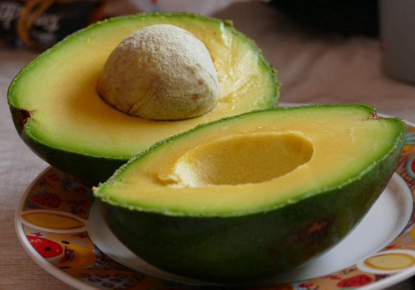
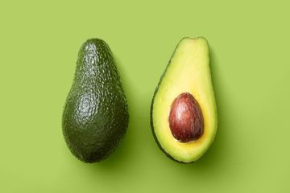

Alpukat merupakan jenis buah yang memiliki kandungan lemak tinggi, sekitar 20 kali lebih tinggi dibanding buah-buahan lain. Nama latin tanaman alpukat adalah Persea americana, diyakini berasal dari Amerika Tengah. Buah ini dikenalkan ke Indonesia oleh Hindia Belanda sekitar tahun 1920-1930.
Di Indonesia, tanaman alpukat masih merupakan tanaman pekarangan, belum dibudidayakan dalam skala usahatani. Daerah penghasil alpukat adalah Jawa Barat, Jawa Timur, sebagian Sumatera, Sulawesi Selatan, dan Nusa Tenggara.
Pohon Alpukat dapat mencapai tinggi 20 m, dengan daun sepanjang 12 hingga 25 cm. Bunganya tersembunyi dengan warna hijau kekuningan dan ukuran 5 hingga 10 milimeter. Ukuran buah bervariasi dari 7 hingga 20 sentimeter, dengan massa 100 hingga 1000 gram; biji besar sekitar 5 hingga 6 cm.

Jus alpukat termasuk salah satu minuman yang banyak digemari. Buah hijau satu ini memang dikenal lezat dan sehat. Alpukat mengandung berbagai jenis vitamin, asam folat, magnesium, hingga potassium. Alpukat juga cocok dikonsumsi saat diet karena tidak bikin gendut.
Dalam satu sajian buah alpukat (sekitar 50 gram) terdapat 80 kalori, 8 gram lemak, 4 gram karbohidrat, dan sekitar 1 gram protein. Selain itu terdapat juga berbagai macam vitamin seperti E, K, B5 dan B6.
| No | Jenis Alpukat | Harga 1 Kg | Harga 2 Kg | Harga 3 Kg |
|---|---|---|---|---|
| 1 | Alpukat Mentega | Rp. 35.000,- | Rp. 65.000,- | Rp. 90.000,- |
| 2 | Alpukat Miki | Rp. 50.000,- | Rp. 90.000,- | Rp. 135.000,- |
| 3 | Alpukat Aligator | Rp. 30.000,- | Rp. 55.000,- | Rp. 80.000,- |
| 4 | Alpukat Kendil | Rp. 40.000,- | Rp. 75.000,- | Rp. 100.000,- |

PEMBAYARAN DI TEMPAT / COD
Hanya untuk Jakarta, Bekasi dan Depok
POTONGAN ONGKIR Rp.5.000,-
UNTUK PEMBELIAN VIA TRANSFER